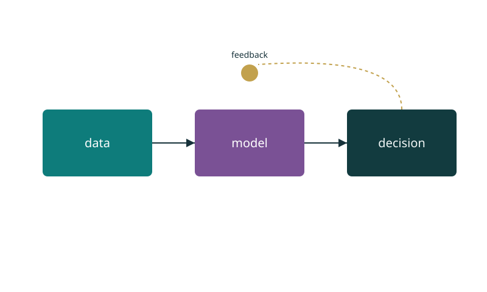

Slide-Agent Deck · 2026
Replace this seed content with your own story. This deck demonstrates the harness: layouts, tokens and the kujaku theme.
Agenda
Section 01
layouts/.base.css + the active theme.Section 02

Each figure file embeds its theme as a style block — opens in any tool.
Swap the figure's style block for another theme's. Nothing else changes.
Section 03
Thank you